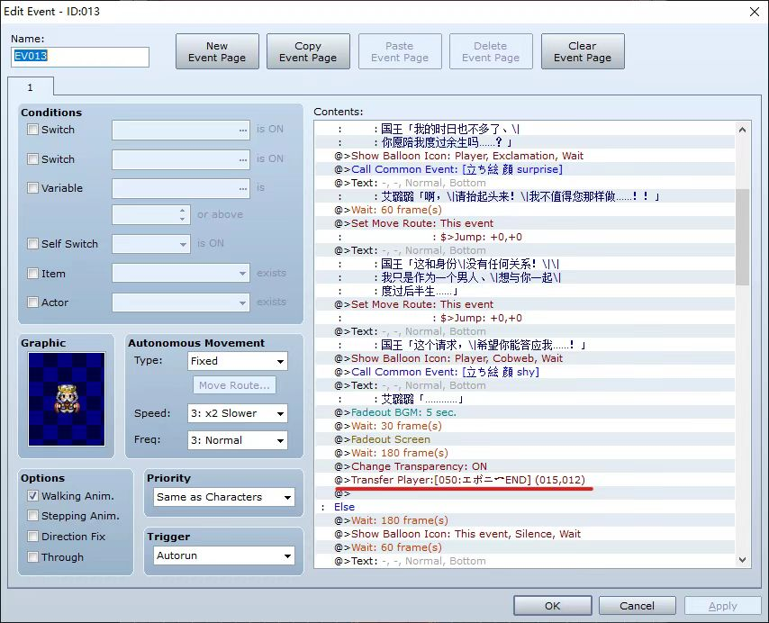

玩多结局游戏总怕落下结局是吗？ 解析游戏文件看看结局是什么样的吧！ - - - - - - - - - - - - - -
- - - - - - - - - - - - - - 本贴为所有吧友提供信息支持 本贴是2022.4.27版
---- 总览 - - - - 本作一共四种结局，按游戏内标注，分别是色気end，エボニend，サンドルend，一般ドレスend 也就是淫乱结局，皇后结局，父亲结局，女皇结局
---- 详情 - - - - 1.色気end，翻译过来就是色诱结局❤️，应该是最简单的结局了，只是有点花时间，条件是，时间在可以自由穿衣之后，服装要求暴露(一般的，只要穿上之后艾璐璐会脸红的就可以），这两点满足后去与城池守卫对话 2.一般ドレスend，翻译过来就是一般礼服结局，要求是，服装要求贵族礼服或者梦幻礼服，进程要求既没付给恩波利杀父亲的钱，又没给圣多罗医父亲的钱。满足后穿着礼服与城池守卫对话 3.エボニend，翻译过来就是恩波利结局，要求是，服装要求贵族礼服或者梦幻礼服，进程要求已经付给恩波利杀父亲的钱，父亲已经没了。满足后穿着礼服与城池守卫对话 4.サンドルend，翻译过来就是圣多罗结局，也就是俗称的最好结局，要求是，服装要求贵族礼服或者梦幻礼服，进程要求已经给了圣多罗医父亲的钱，父亲已经住院。满足后穿着礼服与城池守卫对话
---- 游戏文件解析 - - - - 游戏判定结局流程如下 首先你进入晚会后判定你是色気入城还是其他，判定后分别使用图中红线以下对话，接着都会传送到国王驱散大臣的场景 接下来进入国王驱散大臣的场景，游戏首先判定你是色気入城还是其他，如果是色気入城，引用相应对话，并在对话结束后传送至"色気end"场景(就是寝室外俩卫兵听国王和艾璐璐云雨的场景），最后结束黑屏时会引用色気end的评语 上面第一个结局就结束了，判定如果是其他，则判定是否给过恩波利钱了，如果是，则引用图中红线以下的对话，并在对话结束后传送至"エボニend"(就是艾璐璐在皇宫里打扫卫生的场景)，最后结束后引用エボニend的评语(就是国王又活了二十年那个)  上面第二个结局就结束了，判定如果是其他，进行完相认对话后，判定是否给过圣多罗钱了，如果是，传送至"サンドルend"(就是以父亲视角的剧情，并且评语提前出现在剧情开始之前的黑屏里)，最后动人的对话结束后，游戏结束 上面最好结局就结束了，进行完相认对话后，判定是否给过圣多罗钱了，如果是其他(即既没给恩波利也没给圣多罗），传送至"一般ドレスend"(就是国王快不行了与艾璐璐交谈的场景)，最后对话结束后，在黑屏中引用一般ドレスend的评语(就是艾璐璐平定内乱治理国家的那个)
本贴是2022.4.27版
历史版（累计有阅读数：0、点赞数：0、回复数：0）：